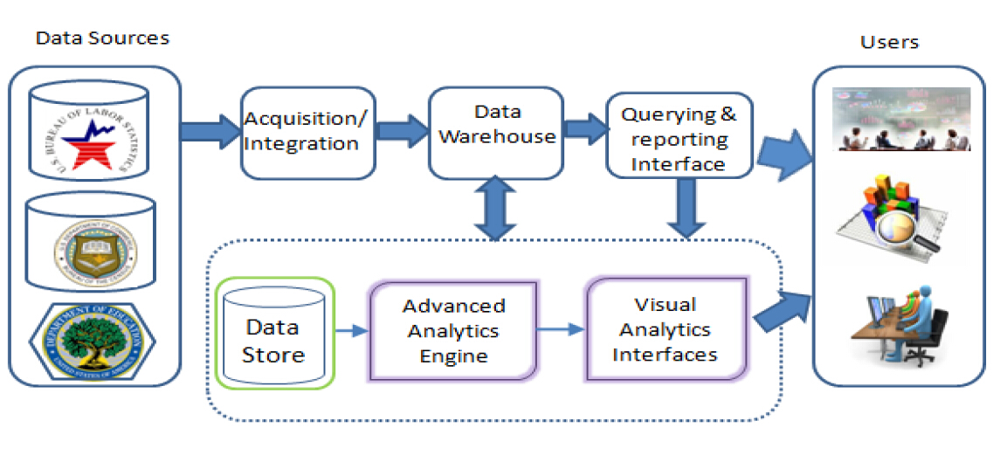

|

|
In Proceedings of the First International Workshop on Bringing the Value of Big Data to Users (Data4U 2014), p. 25. ACM, 2014.
Ramoza Ahsan, Rodica Neamtu, Jeff Stokes, Armend Hoxha, Jialiang Bao, Stefan Gvozdenovic, Ted Meyer, Nilesh Patel, Raghu Rangan, Yumou Wang, Dongyun Zhang, and Elke A. Rundensteiner
Source
|